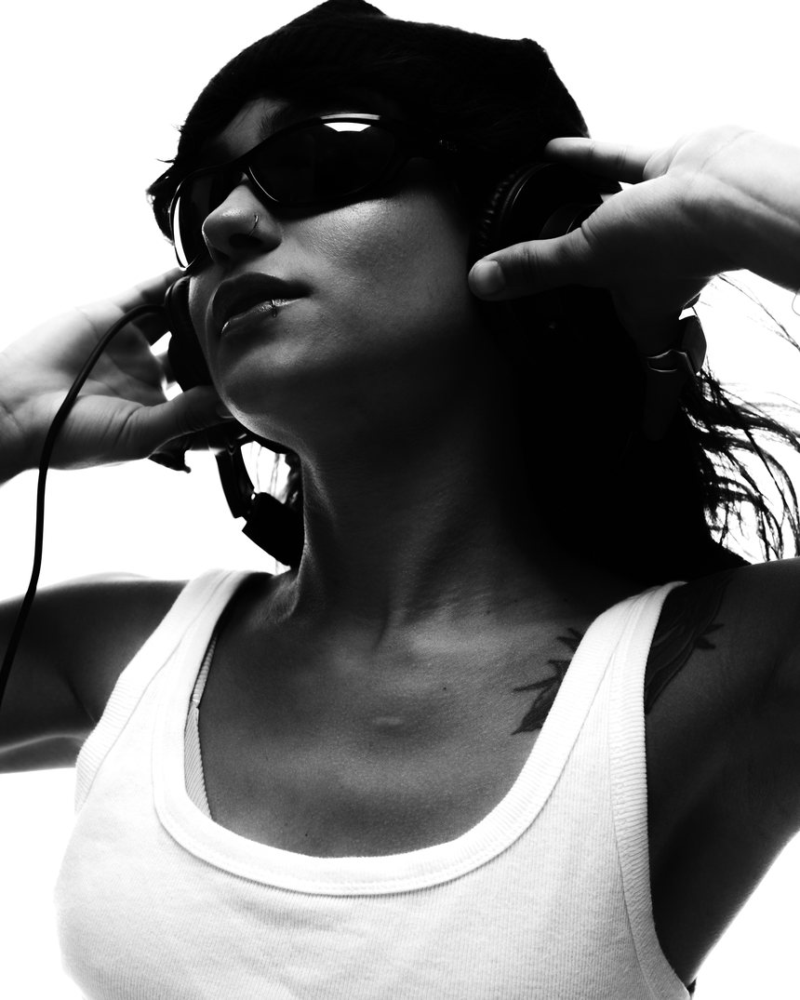

press kit 2026

gabriela brito
es · br
sobre
Britox é o projeto musical da DJ, jornalista e viajante capixaba Gabriela Brito.
Sua pesquisa parte da música brasileira, mas não se limita a ela: costura vocais, percussões e elementos brasileiros à linguagem da pista, entre referências locais e globais.
house · techno · funk · disco · dance · latin · brazilian edits · afro-latin grooves · brazilian funk · mepb
Entre house, techno, funk, disco, dance e grooves afrolatinos, Britox cria sets que atravessam referências locais e globais, costurando vocais, percussões e elementos da música brasileira à linguagem da pista.
A pesquisa se adapta à atmosfera: pode construir um sunset, acompanhar um ambiente mais contemplativo ou conduzir uma pista quente e dançante. Em diferentes intensidades, seus sets têm como fio condutor o groove, a presença vocal e a construção de uma experiência coletiva.
Capixaba e viajante, sua relação com o litoral, a cultura urbana e a música brasileira atravessa esse universo — sem se prender a um único gênero ou formato.
britox ✶ gabriela brito
britox.vercel.app
informações
- base
- Espírito Santo
Brasil
- projeto
- Britox
- atuação
- Brasil
LATAM
- formatos
- Clubs · festivais
eventos · residências
sunsets
música
soundcloud · /britoxxx
brasil em transe 001
set gravado · 31:47 · sets, edits e mixtapes
soundcloud.com/britoxxx/brasil-em-transe-001
trajetória
três estados · 8 cidades
espírito santo
base · 7
- Gastafest cariacica · dez 2025
- Festival de Pescados de Jesus de Nazareth vitória · out 2025
- A Selva vitória · diversas festas
- Bolt vitória · diversas festas
- Fluente vitória · diversas festas
- MC Corrida / Movimento Cidade vila velha · ago 2026
- Espírito Sound cariacica · matrix music hall · nov 2026
maranhão
lençóis · 9
- Braasa atins · jul 2026
- Baile do Sound atins · ago 2026
- Samba do Lençóis atins · set 2026
- Lar Doce Mar sunsets alta temporada atins 2026
- Charme Beach Bar sunsets alta temporada atins 2026
- Jungle diversas apresentações na alta temporada atins 2026
- Flor de Vinagreira santo amaro · jun 2026
- Quintal do Casarão santo amaro · jun 2026
- Nova Brasillis 11 são luís · set 2026
bahia
litoral · 2
- Casa Cultural Serra do Lapão lençóis · mar 2026
- Festa Ano Novo Casa de Minas cumuruxatiba · 2025/2026
Disponível para clubs, festivais, eventos privados, beach clubs e residências — Brasil & LATAM.
whatsapp+55 27 99721-8376
e-mailbritoxdj@gmail.com
instagram@gabrielabritox
soundcloud/britoxxx
© 2026 britox ✶ gabriela brito ✶ britox.vercel.app
Desenvolvido por Explore Marketing